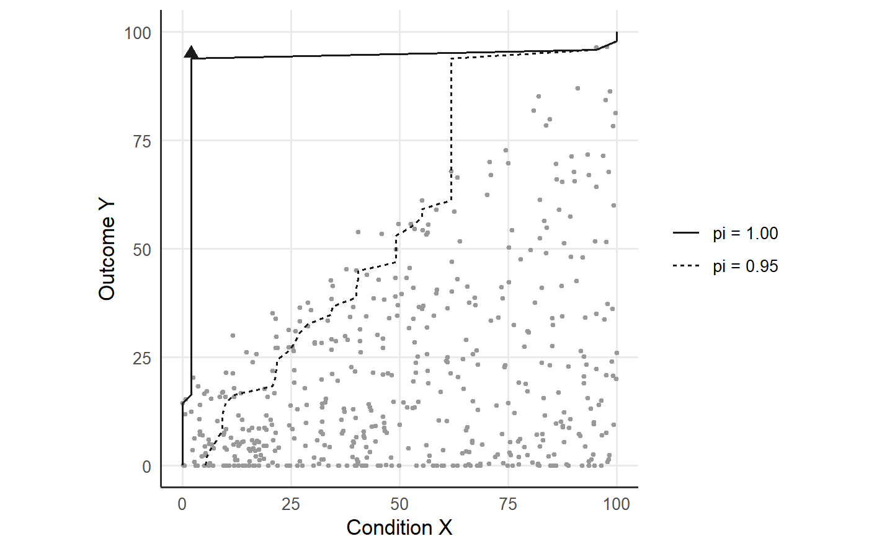
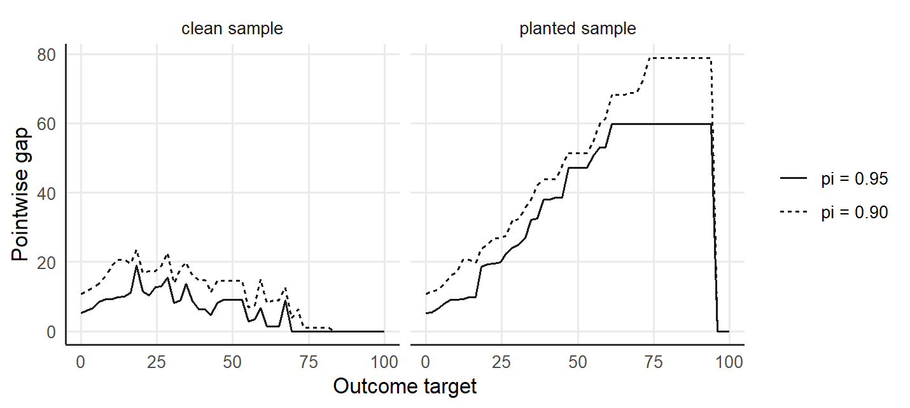
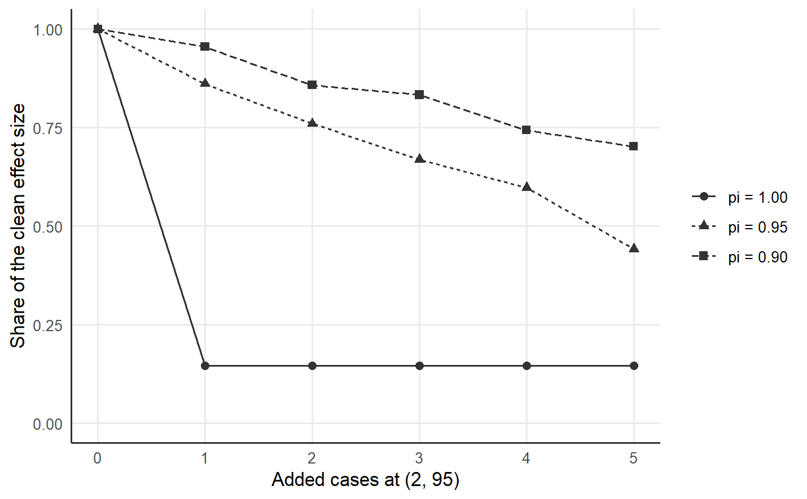

9 Paths across tolerances and outlier-fragility
The CE-FDH ceiling of Necessary Condition Analysis (NCA) sets the bottleneck at each outcome target to the lowest condition value among the cases that reach the target, so one case holds each strict bottleneck (Dul 2016). One valid but unusual efficient case, with a high outcome and a low condition, can lower several bottlenecks and shrink the empty-zone effect size (Deja 2026b). The ceiling is the strictest boundary that every observed case respects, so one case suffices to move the ceiling (Deja 2026b).
Quantile Necessary Condition Analysis (QNCA) indexes the frontier by a tolerance pi in (0, 1], which fixes the share 1 - pi of successful cases that may sit below the requirement (Deja 2026b). At a target \(y_j\) of the outcome grid, \(k_j\) cases reach \(Y \ge y_j\), and the raw frontier returns the condition value of rank \(h_j = \max\{1, \lceil k_j (1 - \pi) \rceil\}\) among the \(k_j\) cases. The monotone envelope takes the running maximum over the lower targets, and the fixed scope sets the requirement to the upper condition bound above the largest observed outcome. The effect size d_pi divides the area left of the fitted frontier by the area of the scope rectangle.
9.1 Resistance to added cases
The resistance proposition of Deja (2026b) bounds the effect of \(c\) cases added at arbitrary positions in the scope. At a target with \(h_j > c\), the raw requirement of the augmented sample lies at or above the \((h_j - c)\)th smallest condition value of the original successful cases, and at or below the \((h_j + c)\)th smallest value whenever \(h_j + c \le k_j\). The envelope carries the lower bound to every higher target. The condition \(h_j > c\) reads \(k_j > c/(1 - \pi)\), so at pi = 0.95 one added case is absorbed wherever more than 20 original cases reach the target. At pi = 1, the rank is 1 at every target, and one added case can lower every bottleneck the added case attains to the condition value of the added case.
9.2 The tolerance path
At a grid target \(y_j\), the pointwise gap is \(g_\pi(y_j) = \tilde\varphi_\pi(y_j) - \tilde\varphi_1(y_j)\), and the effect-size gap is \(g_d(\pi) = d_\pi - d_1\) (Deja 2026b). Both gaps are zero at pi = 1 and non-negative at pi < 1, because a lower tolerance selects an order statistic of equal or higher rank at every target. A positive pointwise gap identifies a target whose CE-FDH bottleneck rests on the most efficient successful cases.
A flat path over tolerances fixed in advance suggests limited dependence on the cases with the lowest condition values, and a steep path flags outlier-fragility at the affected targets (Deja 2026b). The pointwise path is the primary display, because decisions concern particular targets and the area gap can be small when a large local change covers a narrow range of targets. The diagnostic sets no pass-or-fail cut-off; the path shows which outcome targets depend on exceptional observed successes (Deja 2026b).
9.3 A clean and a planted sample
The synthetic dataset of 500 cases of the qnca repository has a condition and an outcome on a scale from 0 to 100, and the analysis fixes the scope at [0, 100] x [0, 100]. The planted sample adds one efficient case at (X, Y) = (2, 95). The path runs over the tolerances 1.00, 0.99, …, 0.90, rounded to two decimals because the package reads a tolerance as a decimal with at most nine places.
library(qnca)
d <- read.csv("https://raw.githubusercontent.com/MarekDejaUJ/qnca/main/data/qnca_dataset_n500.csv")
scope <- c(0, 100, 0, 100)
planted <- rbind(d, data.frame(X = 2, Y = 95))
pis <- round(seq(1, 0.90, by = -0.01), 2)
d_clean <- sapply(pis, function(p) qnca(d$X, d$Y, pi = p, B = 0, scope = scope)$d_pi)
d_planted <- sapply(pis, function(p) {
qnca(planted$X, planted$Y, pi = p, B = 0, scope = scope)$d_pi
})
path <- data.frame(pi = pis, d_clean, gap_clean = d_clean - d_clean[1],
d_planted, gap_planted = d_planted - d_planted[1])
round(path, 3)
#> pi d_clean gap_clean d_planted gap_planted
#> 1 1.00 0.452 0.000 0.066 0.000
#> 2 0.99 0.464 0.012 0.201 0.135
#> 3 0.98 0.479 0.027 0.324 0.258
#> 4 0.97 0.489 0.037 0.393 0.327
#> 5 0.96 0.502 0.050 0.429 0.363
#> 6 0.95 0.510 0.058 0.439 0.373
#> 7 0.94 0.520 0.068 0.472 0.406
#> 8 0.93 0.532 0.080 0.479 0.413
#> 9 0.92 0.542 0.090 0.498 0.432
#> 10 0.91 0.547 0.095 0.521 0.455
#> 11 0.90 0.558 0.106 0.533 0.467On the clean sample, d_pi rises from 0.452 at pi = 1 to 0.558 at pi = 0.90, and the gap at pi = 0.95 is 0.058. The planted case lowers the strict effect size to 0.066 and the effect size at pi = 0.95 to 0.439, and the gap at pi = 0.95 widens to 0.373. The planted path is steep at the first steps, with the effect size rising from 0.066 at pi = 1 to 0.324 at pi = 0.98.
frontiers <- rbind(
data.frame(tolerance = "pi = 1.00",
qnca(planted$X, planted$Y, pi = 1, B = 0, scope = scope)$bottleneck),
data.frame(tolerance = "pi = 0.95",
qnca(planted$X, planted$Y, pi = 0.95, B = 0, scope = scope)$bottleneck))
frontiers$tolerance <- factor(frontiers$tolerance, levels = c("pi = 1.00", "pi = 0.95"))
ggplot() +
geom_point(data = d, aes(X, Y), size = 0.7, colour = "grey60") +
geom_path(data = frontiers, aes(X_required, outcome_level, linetype = tolerance),
colour = "grey10") +
annotate("point", x = 2, y = 95, shape = 17, size = 2.5, colour = "grey10") +
coord_equal(xlim = c(0, 100), ylim = c(0, 100)) +
labs(x = "Condition X", y = "Outcome Y", linetype = NULL)
Figure 9.1: The 500 cases of the synthetic dataset (grey dots) with one planted efficient case at (2, 95) (triangle), fixed scope [0, 100] x [0, 100], grid of 50 outcome targets. The fitted frontier at pi = 1.00 falls to the condition value of the planted case, or lower, at every target the planted case attains; the fitted frontier at pi = 0.95 holds the requirement of the target 67.35, the last target reached by more than 20 cases, up to the outcome 95 of the planted case.
9.4 The pointwise path
The summary counts the targets with a positive pointwise gap at the tolerances 0.95 and 0.90 and reports the largest gap and the target of the largest gap.
gap_rows <- function(data, label) {
strict <- qnca(data$X, data$Y, pi = 1, B = 0, scope = scope)$bottleneck
do.call(rbind, lapply(c(0.95, 0.90), function(p) {
b <- qnca(data$X, data$Y, pi = p, B = 0, scope = scope)$bottleneck
data.frame(sample = label, tolerance = sprintf("pi = %.2f", p),
target = b$outcome_level, gap = b$X_required - strict$X_required)
}))
}
pointwise <- rbind(gap_rows(d, "clean sample"), gap_rows(planted, "planted sample"))
pointwise$tolerance <- factor(pointwise$tolerance, levels = c("pi = 0.95", "pi = 0.90"))
summary_gap <- do.call(rbind, lapply(split(pointwise, ~ tolerance + sample), function(g) {
data.frame(sample = g$sample[1], tolerance = g$tolerance[1],
positive_targets = sum(g$gap > 0), max_gap = round(max(g$gap), 1),
at_target = round(g$target[which.max(g$gap)], 1))
}))
rownames(summary_gap) <- NULL
summary_gap
#> sample tolerance positive_targets max_gap at_target
#> 1 clean sample pi = 0.95 34 19.0 18.4
#> 2 clean sample pi = 0.90 41 23.6 18.4
#> 3 planted sample pi = 0.95 47 59.9 61.2
#> 4 planted sample pi = 0.90 47 78.9 73.5At pi = 0.95, the clean sample has a positive gap at 34 of the 50 targets, with a largest gap of 19.0 at the target 18.4. The planted sample has a positive gap at 47 targets, with a largest gap of 59.9 at the target 61.2, because the strict frontier falls to the planted case.
ggplot(pointwise, aes(target, gap, linetype = tolerance)) +
geom_line(colour = "grey10") +
facet_wrap(~ sample) +
labs(x = "Outcome target", y = "Pointwise gap", linetype = NULL)
Figure 9.2: Pointwise gap between the fitted frontier at pi = 0.95 or 0.90 and the fitted frontier at pi = 1.00 at each of the 50 outcome targets, for the synthetic dataset of 500 cases (clean sample) and for the same data with one planted case at (2, 95) (planted sample), fixed scope [0, 100] x [0, 100].
9.5 The resistance bound on the planted sample
The check applies the proposition with \(c = 1\) at the targets where the clean sample selects a rank above 1 at pi = 0.95.
clean_res <- qnca_resolution(d$X, d$Y, pi = 0.95, scope = scope)
planted_res <- qnca_resolution(planted$X, planted$Y, pi = 0.95, scope = scope)
resolved <- which(clean_res$rank > 1)
bounds <- t(sapply(resolved, function(j) {
x <- sort(d$X[d$Y >= clean_res$y[j]])
h <- clean_res$rank[j]
c(lower = x[h - 1], upper = x[h + 1])
}))
raw_planted <- planted_res$raw[resolved]
last <- max(clean_res$y[resolved])
upper_band <- planted_res$y > last & planted_res$y < 95
data.frame(resolved_targets = length(resolved), last_resolved = round(last, 2),
within_bounds = all(raw_planted >= bounds[, "lower"] & raw_planted <= bounds[, "upper"]),
raw_above_last = max(planted_res$raw[upper_band]),
fitted_above_last = round(max(planted_res$fitted[upper_band]), 2))
#> resolved_targets last_resolved within_bounds raw_above_last fitted_above_last
#> 1 34 67.35 TRUE 2 61.87At pi = 0.95, 34 targets of the clean sample are reached by more than 20 cases, the last at the target 67.35. At each of the 34 targets, the raw requirement of the planted sample lies between the original order statistics of rank \(h_j - 1\) and \(h_j + 1\), as the proposition states for one added case. Between the target 67.35 and the outcome 95 of the planted case, the raw requirement falls to the condition value 2 of the planted case, and the envelope holds the requirement of 61.87 reached at the target 67.35.
9.6 Deletion and addition screens
The deletion screen qnca_outliers() with k = 1 deletes each case in turn, recomputes d_pi at the tolerances 1.00, 0.95 and 0.90 on the fixed scope and flags a case whose deletion changes an effect size by at least one percent, in the manner of the NCA outlier screen (Deja 2026b).
columns <- c("cases", "flagged", "dif_rel_1", "dif_rel_0.95", "dif_rel_0.9")
screen <- qnca_outliers(planted$X, planted$Y, k = 1, scope = scope)
head(screen$table[, columns], 3)
#> cases flagged dif_rel_1 dif_rel_0.95 dif_rel_0.9
#> 1 501 TRUE 5.842138 0.161466614 0.047133903
#> 2 451 TRUE 0.000000 0.058531148 0.005571610
#> 3 1 FALSE 0.000000 -0.001375784 -0.008616346
clean_screen <- qnca_outliers(d$X, d$Y, k = 1, scope = scope)
head(clean_screen$table[, columns], 2)
#> cases flagged dif_rel_1 dif_rel_0.95 dif_rel_0.9
#> 1 195 TRUE 0.011041718 0.001903504 0.003738626
#> 2 451 FALSE 0.005851533 0.008940018 -0.000354705On the planted sample, the planted case 501 heads the screen with relative changes of 5.84 at pi = 1, 0.161 at pi = 0.95 and 0.047 at pi = 0.90. On the clean sample, the screen flags case 195, a draw of the generator, with a relative change of 0.011 at pi = 1.
Deletion and the tolerance path answer different questions: deletion asks whether a case belongs in the data, whereas the tolerance path keeps the case and reports how the estimator responds across tolerances fixed in advance (Deja 2026b). NCA guidance asks whether a ceiling case reflects error, another population or valid heterogeneity, and ties removal to evidence of error or of another population (Dul et al. 2023).
The addition screen qnca_sensitivity() adds 0 to 5 copies of the planted case to the clean sample and reports the retained share of the clean effect size, the empirical breakdown curve of d_pi.
added <- qnca_sensitivity(d$X, d$Y, points = c(2, 95), counts = 0:5, scope = scope)
retention <- data.frame(added = added$counts, round(added$retention, 3))
names(retention)[-1] <- sprintf("pi_%.2f", added$pi)
retention
#> added pi_1.00 pi_0.95 pi_0.90
#> 1 0 1.000 1.000 1.000
#> 2 1 0.146 0.861 0.955
#> 3 2 0.146 0.760 0.858
#> 4 3 0.146 0.669 0.833
#> 5 4 0.146 0.597 0.743
#> 6 5 0.146 0.441 0.703One added case leaves the strict member 0.146 of the clean effect size, and further copies keep the strict share at 0.146, because the first copy already sets the ceiling at every target the copies attain. The member at pi = 0.95 retains 0.861 with one added case and 0.441 with five, and the member at pi = 0.90 retains 0.955 and 0.703. The copies sit at the outcome 95, in the sparse top of the outcome range, where the resistance of the tolerant members weakens (Deja 2026b).
curve <- data.frame(added = rep(added$counts, times = length(added$pi)),
tolerance = rep(sprintf("pi = %.2f", added$pi), each = length(added$counts)),
retention = as.vector(added$retention))
curve$tolerance <- factor(curve$tolerance, levels = sprintf("pi = %.2f", added$pi))
ggplot(curve, aes(added, retention, linetype = tolerance, shape = tolerance)) +
geom_line(colour = "grey20") +
geom_point(colour = "grey20", size = 2) +
scale_y_continuous(limits = c(0, 1)) +
labs(x = "Added cases at (2, 95)", y = "Share of the clean effect size",
linetype = NULL, shape = NULL)
Figure 9.3: Breakdown curves for the synthetic dataset of 500 cases: the share of the clean effect size d_pi retained after adding 0 to 5 cases at (2, 95), at the tolerances pi = 1.00, 0.95 and 0.90, fixed scope [0, 100] x [0, 100], grid of 50 outcome targets.
The file outlier_diagnostic.csv of the repository stores the planted-boundary example of Deja (2026b), a sample of 300 cases with the same planted case.
read.csv("https://raw.githubusercontent.com/MarekDejaUJ/qnca/main/data/outlier_diagnostic.csv",
check.names = FALSE)
#> case d_pi_1.00 d_pi_0.95 gap
#> 1 clean 0.457386 0.515699 0.058312
#> 2 with_efficient_outlier 0.064953 0.451162 0.386209In the stored example, the strict effect size falls from 0.457 to 0.065, the effect size at pi = 0.95 moves from 0.516 to 0.451, and the gap widens from 0.058 to 0.386.
9.7 Outlier-fragility and spuriousness
Outlier-fragility and spuriousness are different failure modes. Outlier-fragility means that one or a few efficient cases hold the estimated boundary, and the tolerance path diagnoses outlier-fragility. Spuriousness means that correlation, skewness or a sufficiency relation produces the empty zone, and a spurious empty zone moves all members of the path together, so a flat path is compatible with spuriousness (Deja 2026b). The permutation test and the dependence-matched reference band of the function spuriousness_band() address spuriousness, and the band is a proposed diagnostic with operating characteristics still to be established (Deja 2026b).
9.8 The same path in Python and Julia
The Python and Julia packages return the same effect sizes and the same breakdown curve.
from urllib.request import urlopen
import numpy as np
from qnca import qnca, qnca_sensitivity
url = "https://raw.githubusercontent.com/MarekDejaUJ/qnca/main/data/qnca_dataset_n500.csv"
X, Y = np.loadtxt(urlopen(url), delimiter=",", skiprows=1, unpack=True)
scope = (0.0, 100.0, 0.0, 100.0)
Xp, Yp = np.append(X, 2.0), np.append(Y, 95.0)
for pi in (1.0, 0.95, 0.90):
clean = qnca(X, Y, pi=pi, B=None, scope=scope).d_pi
with_case = qnca(Xp, Yp, pi=pi, B=None, scope=scope).d_pi
print(pi, clean, with_case)
added = qnca_sensitivity(X, Y, points=(2.0, 95.0), counts=range(6), scope=scope)
print(np.round(added.retention, 3))
#> 1.0 0.4519739060081383 0.06605740917812972
#> 0.95 0.509730627746975 0.43886808414885725
#> 0.9 0.5583811027836546 0.533247086375451
#> [[1. 1. 1. ]
#> [0.146 0.861 0.955]
#> [0.146 0.76 0.858]
#> [0.146 0.669 0.833]
#> [0.146 0.597 0.743]
#> [0.146 0.441 0.703]]using QuantileNecessity, Downloads, DelimitedFiles
url = "https://raw.githubusercontent.com/MarekDejaUJ/qnca/main/data/qnca_dataset_n500.csv"
data = readdlm(Downloads.download(url), ',', Float64; skipstart = 1)
X, Y = data[:, 1], data[:, 2]
scope = (0.0, 100.0, 0.0, 100.0)
Xp, Yp = vcat(X, 2.0), vcat(Y, 95.0)
for p in (1.0, 0.95, 0.90)
clean = qnca(X, Y; pi = p, B = 0, scope = scope).d_pi
with_case = qnca(Xp, Yp; pi = p, B = 0, scope = scope).d_pi
println(p, " ", clean, " ", with_case)
end
added = qnca_sensitivity(X, Y; points = (2.0, 95.0), counts = 0:5, scope = scope)
foreach(println, eachrow(round.(added.retention; digits = 3)))
#> 1.0 0.4519739060081383 0.06605740917812972
#> 0.95 0.5097306277469752 0.43886808414885736
#> 0.9 0.5583811027836548 0.533247086375451
#> [1.0, 1.0, 1.0]
#> [0.146, 0.861, 0.955]
#> [0.146, 0.76, 0.858]
#> [0.146, 0.669, 0.833]
#> [0.146, 0.597, 0.743]
#> [0.146, 0.441, 0.703]